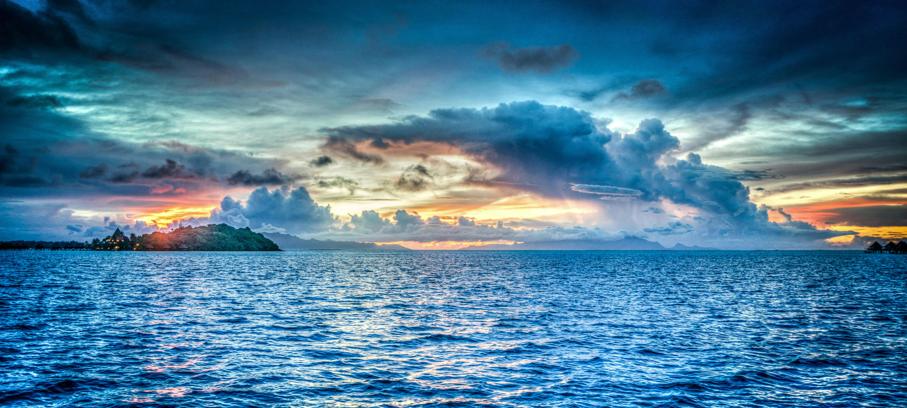
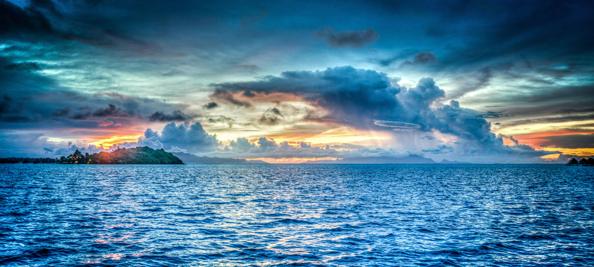
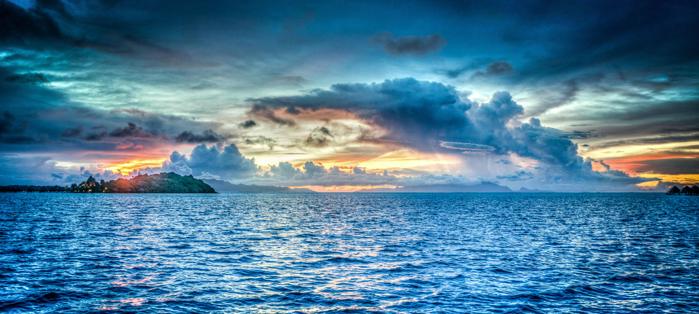

Ocean Habitat
Covering 70% of the earth, oceans are home to a vast world of marine life.
Explore the fascinating world of animals!

Covering 70% of the earth, oceans are home to a vast world of marine life.
Oceans are massive bodies of salt water that surround continents. They host a wide variety of ecosystems, from shallow coral reefs to the deep dark sea. Ocean habitats support whales, dolphins, sharks, turtles, and millions of fish and plant species.

Colorful underwater structures formed by corals. Coral reefs are rich in biodiversity, home to clownfish, sea turtles, and anemones.

This is the deep blue sea, far from shore. Whales, dolphins, tuna, and sharks roam these vast waters.

Dark and cold, the deep sea is home to strange creatures like anglerfish and giant squid. It's one of the least explored places on Earth.

Smart and social mammals that live in pods. They communicate with clicks and whistles.

Graceful swimmers with hard shells, they nest on beaches and live most of their lives in the sea.
Top predators of the ocean, sharks help keep marine life populations balanced.